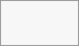

You may create your own special upload directories so that other people can upload files to you without logging in to the server or having a
In the Files app, create or choose the folder to receive anonymous uploads:
Enable Share Link, Allow editing, and Hide file listing:

Now you can send the link to the upload folder manually or by using the
Using the anonymous upload function is simple. You receive a link to the upload folder, click the link, and then you'll see a
This opens a file picker, and you select the file or directory you want to upload. You can also drop files into the window.
When your upload is completed, the filenames are listed: